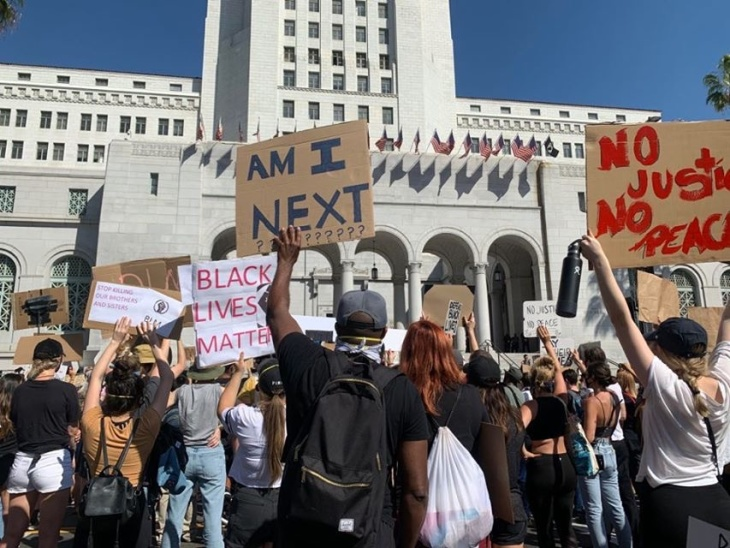
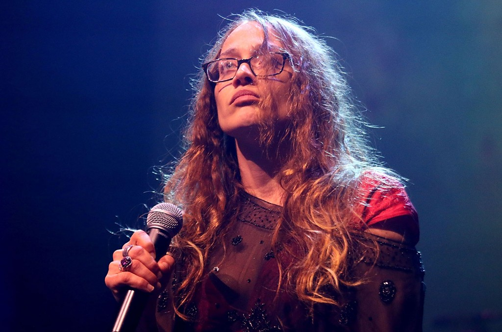
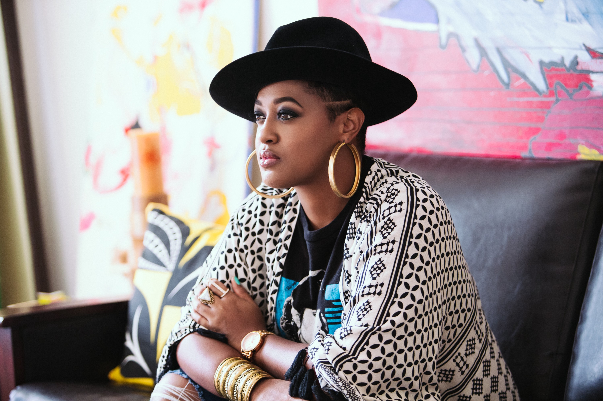

Black Lives Matter defends plan to defund L.A. police after Garcetti rejects it
By Jonah Valdez - 6/12/20
One day after Los Angeles Mayor Eric Garcetti said he does not support a proposal backed by Black Lives Matter Los Angeles and other groups to make significant cuts to the Los Angeles Police Department, organizers of the campaign on Thursday defended their plan. “It’s not unexpected,” said Melina Abdullah, founding member of Black Lives Matter Los Angeles in response to Garcetti’s lack of support. “For sure, the People’s Budget is in direct opposition to his budget. He wants to spend the majority of his budget on police.”
The defunding campaign seeks to reinvest money taken from the police budget into communities of color through programs that provide needs such as affordable housing, jobs, and health care. Despite Garcetti’s dismissal of the Black Lives Matter proposal, which has become the bedrock for calls from protesters who have taken to the streets in recent weeks chanting “Defund the police!” at rallies, Abdullah said she and others do not plan on shifting strategy.
Why L.A.’s Freeways Are Symbolic Sites of Protest
By Hadley Meares - 6/11/20

The freeway system displaced generations of people of color.When Angelenos gathered downtown to protest the murder of George Floyd, they started at City Hall and eventually made their way toward the 101. Pastor Stephen “Cue” Jn-Marie from the Row Church led the first group of protesters onto the freeway, which they occupied for roughly 30 minutes. Ever since the murder of Trayvon Martin in 2012, uprisings protesting police brutality and racism have blocked freeways throughout America. The freeway and highway systems in the U.S. are part of “a long, long, long history of looting our communities, looting our lives,” Pastor Cue explains.
Nowhere is this truer than in Los Angeles, where several generations of Angelenos, mainly people of color, have been displaced or trapped by the construction of freeways in the name of progress and ease of movement for white residents, many of whom moved outward to the suburbs of L.A. and Orange counties as the postwar era dawned. “Communities of color, or black folks, were not permitted to live in the suburbs through land covenants made between white homeowners, through racism, through redlining,” Pastor Cue says. “The whole narrative that black folks would bring down the value of the communities … that narrative is lingering in our society, even today.”
Fiona Apple Joins Black Lives Matter Protest in Los Angeles
By Rania Aniftos - 6/1/20
Fiona Apple has joined the ongoing protests in Los Angeles to support justice for George Floyd, who was murdered at the hands of four Minnesota police officers. One officer, Derek Chauvin, has been arrested and charged with third degree murder and second degree manslaughter, but the three others on the scene have been fired but not yet taken into custody.
"Cops: Don't be white chauvinists. Arrest the other three!!!" Apple's sign reads as she's seen marching with other protesters in a video shared to Instagram. She also shouts "Black lives matter" while marching.
Rapsody Says JAY-Z's NFL Partnership Isn't About Colin Kaepernick: 'It's Bigger Than That'
By FNR TIGG - 8/20/19
Rapsody is known for her lyricism and songs with a message. So when she stopped by The Breakfast Club, the Roc Nation artist decided to share her thoughts on JAY-Z's new partnership with the NFL. "I think it's dope," Rapsody said around the interview's 32-minute mark. "I think it's a great move because you got to make change from the inside."
While his partnership with the NFL raised eyebrows, Hov added fuel to the fire when he told the media that athletes should be "past kneeling" when it comes to addressing social issues. This comment received backlash from NFL players, Kenny Stills and Eric Reid, who have supported Kaepernick since the beginning of the protests. But during her response, Rapsody tried to add context to Jigga's statement. "[JAY-Z] said it perfectly," she continued. "If the issue why we were kneeling was to bring awareness to these issues than that's exactly what's happening. It's not about the kneeling... It's not about Kaepernick either. Kaepernick wanted to bring awareness but it's bigger than that. And if you're going to get Kaepernick in there's no better way than having JAY-Z sit at the table and figure this thing out."
Tamika Mallory Declares Black State of Emergency
By Sam Prance - 5/30/20

American activist Tamika Mallory has demanded justice for George Floyd and black people at large at a rally in Minneapolis. Last week (May 29), Tamika Mallory, who co-chaired the Women's March in 2017, joined people protesting police brutality in the wake of George Floyd's murder at the hands of a white police officer. During a rally in Minneapolis, she gave a speech in which she calls out Americans for being more concerned with buildings being burned than black people being killed. Tamika said: "We are in a state of emergency. The reason why buildings are burning is not just for our brother, George Floyd. They’re burning down because people here in Minnesota are saying to people in New York, to people in California, to people in Memphis, to people all across this nation: Enough is enough…"